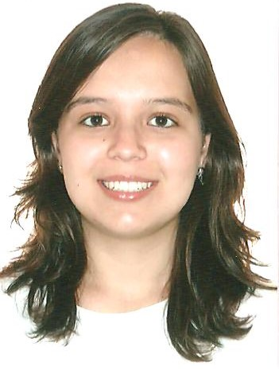

Samantha Gil
Aerospace Engineer
University of Brasilia
December/2018
Objetivo
Trabalhar na área de engenharia, de modo a aplicar os conhecimentos adquiridos durante a graduação e garantir um crescimento profissional.
Experiência
- Estágio na TELEBRAS S.A. (Telecomunicações Brasileiras) na área de Gerência de Tecnologia e Soluções Satelitais (GTSS) – Julho/2018 a Dezembro/2018
- Estágio na TELEBRAS S.A. (Telecomunicações Brasileiras) na área de Gerência de Engenharia e Operação de Satélite (GEOS) – Agosto/2017 a Julho/2018
Habilidades e qualificações
- Linguagens de programação – MATLAB, C++ e Python
- Softwares – Ansys, CATIA V5, HiFly e STK
- Domínio no pacote Microsoft Office
- Conhecimento nos programas Adobe – Photoshop e Illustrator
- Português nativo, Inglês intermediário e Francês básico
- Boa habilidade de trabalhar em grupo, proativa, paciente e flexível.
Relatórios técnicos
- Relatório de Estágio – Gerência de Engenharia e Operação de Satélites (GEOS) – 2018
- Trabalho de Conclusão de Curso – Caracterização de Incertezas em Modelos Estruturais Dinâmicos de Painéis Honeycomb Al-Al – 2017
- Projeto de Iniciação Científica (PIBIC) – Otimização funcional do difusor supersônico para o motor Ramjet – 2015/2016
Atividades acadêmicas
- Monitoria em Métodos Experimentais para Engenharia – 2015/2016
- Curso de Inverno – Introdução às tecnologias espaciais – Instituto Nacional de Pesquisas Espaciais (INPE) – 2015
- Membro e Colaboradora na organização do Capítulo Aerospace & Electronic System Society (AESS) - Institute of Electrical and Electronic Engineers (IEEE) – 2015
- Workshop – Superfície e simulações no CATIA V519 - AESS – 2015
- Monitoria em CAD – 2014
- Estudante Colaboradora do SAE Aerodesign – 2014
- Membro da Staff do 1st IAA Latin American CubeSat Workshop – 2014